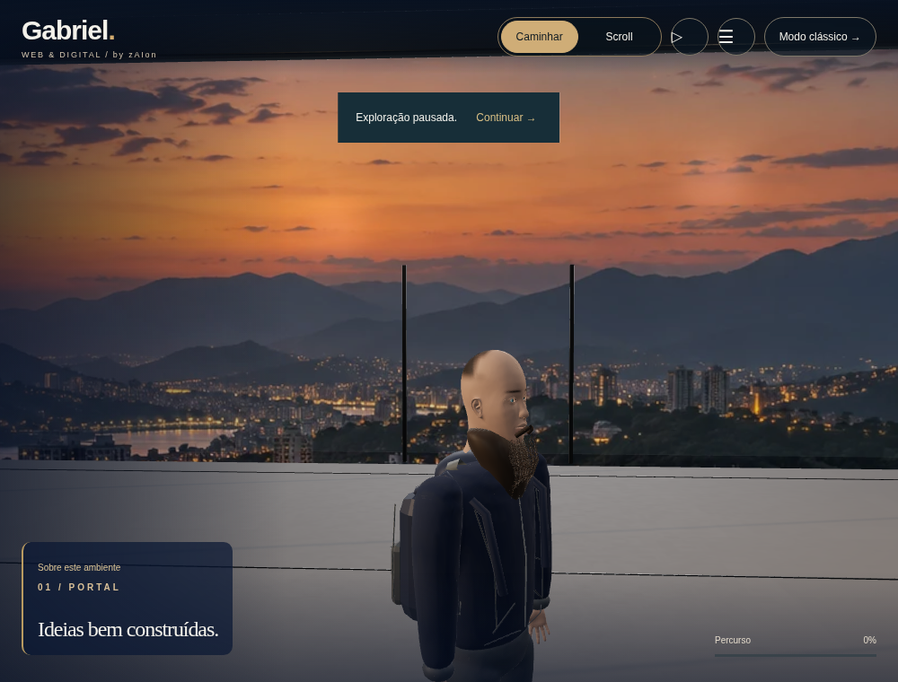
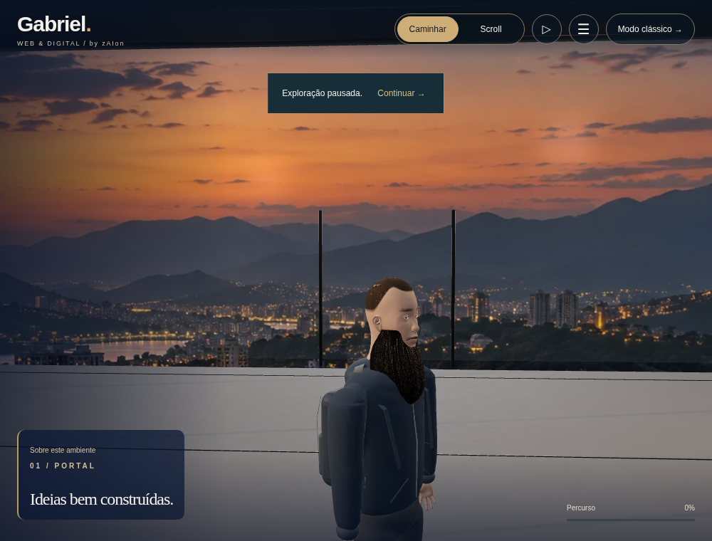
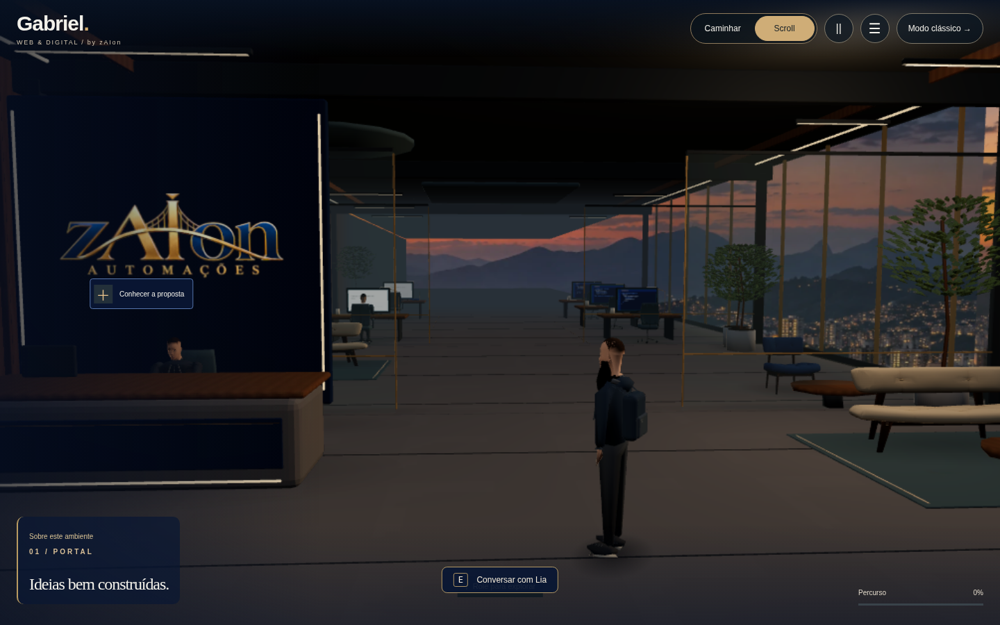
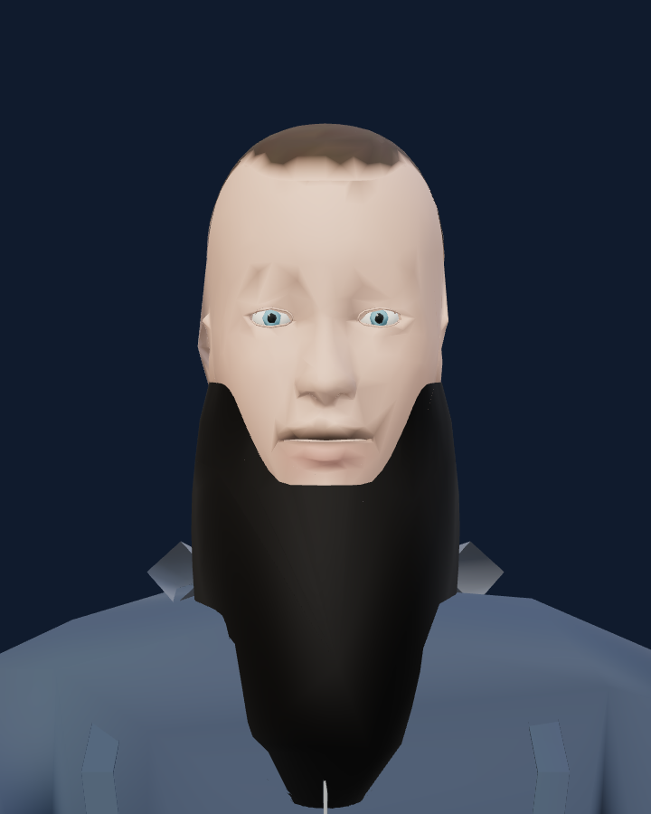
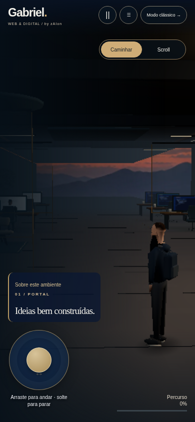

REVISÃO LOCAL · SEM PUBLICAÇÃOGabriel — refinamento do personagem
Barba com contorno do maxilar, cabelo curto conformado ao crânio, sobrancelhas e pálpebras delicadas, ombros menos volumosos, mochila arredondada com alças planas e materiais mais foscos. Iluminação do escritório com preenchimento mais claro.
Detalhes e testes · Relatório do projeto
Modelo real: antes e depois
Capturas do GLB efetivamente usado no site, em WebGL com luz de inspeção fixa. Não são renders offline nem concept art. A iluminação de inspeção permite comparar a geometria; as imagens do escritório abaixo mostram o ambiente real.
No escritório

Antes.
Depois: mesmo enquadramento e caminho PBR, executado em SwiftShader.
Entrada da versão refinada no aplicativo.Geometria para o celular

LOD com orçamento próprio para o rosto. Os microfios são removidos; a silhueta é mantida. Esta ampliação expõe as diferenças em relação ao modelo completo.
Analógico e movimento mais rápido preservados.O avatar permanece estilizado, sem escaneamento facial, textura da foto ou animação facial por blendshapes. Ainda há diferenças de anatomia, cabelo e roupa em relação à foto e às referências. Os testes de navegador usam software e emulação móvel; não comprovam FPS em telefone ou GPU físicos.
ZIP: extraia e execute node INICIAR-REVISAO.mjs. O formulário permanece local, sem envio.